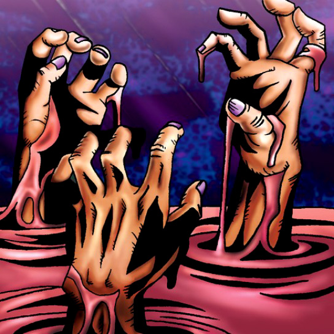

Fiend's Hand

Description: "When destroyed in battle, it destroys the opposing monster as well."
STATS
ATK: 600
DEF: 600DECK COST
Deck Cost per Card: 17EFFECT IS IMPLEMENTED!
Fusion List (48 Possible Fusions)
- Fiend's Hand + Akakieisu = Magical Ghost
- Fiend's Hand + Ancient Sorcerer = Magical Ghost
- Fiend's Hand + Armed Ninja = Zombie Warrior
- Fiend's Hand + Bean Soldier = Pumpking the King of Ghosts
- Fiend's Hand + Blackland Fire Dragon = Dragon Zombie
- Fiend's Hand + Boo Koo = Magical Ghost
- Fiend's Hand + Candle of Fate = Fire Reaper
- Fiend's Hand + Celtic Guardian = Armored Zombie
- Fiend's Hand + Curtain of the Dark Ones = Magical Ghost
- Fiend's Hand + Dark Plant = Firegrass
- Fiend's Hand + Darkfire Dragon = Dragon Zombie
- Fiend's Hand + Darkworld Thorns = Pumpking the King of Ghosts
- Fiend's Hand + Djinn the Watcher of the Wind = Magical Ghost
- Fiend's Hand + Doron = Zombie Warrior
- Fiend's Hand + Dragon Piper = Fire Reaper
- Fiend's Hand + Dragon Statue = Dragon Zombie
- Fiend's Hand + Dragon Zombie = Skelgon
- Fiend's Hand + Eyearmor = Zombie Warrior
- Fiend's Hand + Fire Reaper = Flame Ghost
- Fiend's Hand + Firegrass = Wood Remains
- Fiend's Hand + Flame Snake = Fire Reaper
- Fiend's Hand + Griggle = Wood Remains
- Fiend's Hand + Kagemusha of the Blue Flame = Zombie Warrior
- Fiend's Hand + Kageningen = Zombie Warrior
- Fiend's Hand + Lesser Dragon = Dragon Zombie
- Fiend's Hand + Living Vase = Wood Remains
- Fiend's Hand + Mammoth Graveyard = Great Mammoth of Goldfine
- Fiend's Hand + Man Eater = Wood Remains
- Fiend's Hand + Masaki the Legendary Swordsman = Zombie Warrior
- Fiend's Hand + Mushroom Man #2 = Armored Zombie
- Fiend's Hand + Mushroom Man = Wood Remains
- Fiend's Hand + One-Eyed Shield Dragon = Dragon Zombie
- Fiend's Hand + Oscillo Hero = Armored Zombie
- Fiend's Hand + Petit Dragon = Dragon Zombie
- Fiend's Hand + Phantom Dewan = Magical Ghost
- Fiend's Hand + Pot the Trick = Stone Ghost
- Fiend's Hand + Psychic Kappa = Kappa Avenger
- Fiend's Hand + Queen's Double = Zombie Warrior
- Fiend's Hand + Rainbow Flower = Wood Remains
- Fiend's Hand + Sectarian of Secrets = Magical Ghost
- Fiend's Hand + Skelgon = Curse of Dragon
- Fiend's Hand + Tentacle Plant = Wood Remains
- Fiend's Hand + The Bewitching Phantom Thief = Magical Ghost
- Fiend's Hand + The Judgement Hand = Armored Zombie
- Fiend's Hand + Time Wizard = Magical Ghost
- Fiend's Hand + Wicked Dragon with the Ersatz Head = Dragon Zombie
- Fiend's Hand + Witch of the Black Forest = Magical Ghost
- Fiend's Hand + Yamatano Dragon Scroll = Dragon Zombie